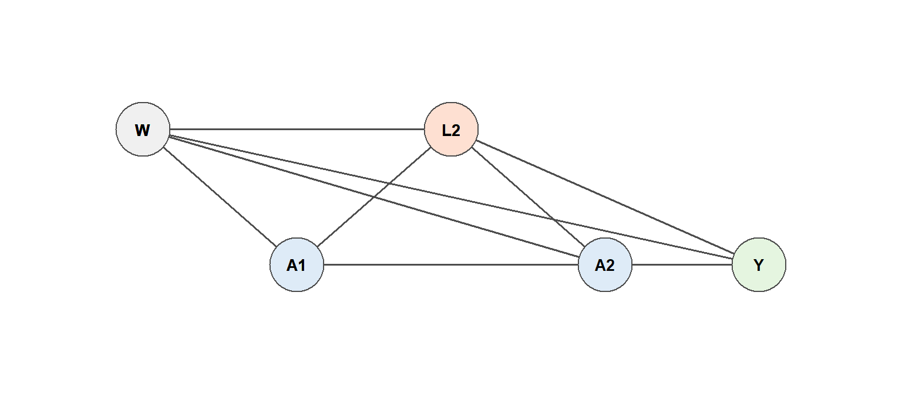

13Longitudinal Causal Inference and Time-Dependent Confounding
Why standard regression fails when treatment and confounders co-evolve, and what to do about it
Estimated reading time: 30 minutes
Learning objectives
Explain why time-varying confounders affected by prior treatment break standard regression, GEE, and mixed models
Identify the treatment–confounder feedback loop in a DAG and distinguish confounding paths from causal mediated paths
State the sequential versions of consistency, exchangeability, and positivity
Describe why G-methods (G-computation, IPTW, L-TMLE) are needed and how they differ from regression
Articulate the connection between static regimes, stochastic interventions, and the forgiveness curve
14 Why Longitudinal Treatments Are Different
Parts I and II dealt with point-treatment settings. In practice, patients start medications, clinicians monitor health, and treatment is adjusted based on that monitoring. This feedback between treatment and health status repeats at every clinical visit and is what makes longitudinal causal inference harder than the point-treatment case. This chapter explains why time-varying confounding affected by prior treatment breaks standard regression, lays out the identification assumptions, and previews the estimation approaches developed in the next two chapters: L-TMLE and LMTP.
14.1 A familiar example first: statins and cholesterol
Consider estimating the effect of sustained statin use on myocardial infarction over two years using electronic health records. At each annual visit, the clinician measures LDL cholesterol and decides whether to prescribe statins. LDL plays two roles simultaneously: it is a confounder for future treatment (high LDL makes prescribing more likely and affects MI risk) and a mediator of past treatment (statins lower LDL). The DAG makes this explicit.
Figure 14.1: Time-varying confounding in a two-year statin study. LDL at the end of year 1 is both a confounder of year-2 treatment and a mediator of year-1 treatment.
Adjusting for LDL in a regression blocks the causal pathway \(A_1 \to L_1 \to Y\); leaving it out leaves \(A_2\) confounded. A time-varying covariate that is both a confounder for future treatment and a mediator of past treatment cannot be handled by standard regression. The simulation below demonstrates this.
The coefficient on \(A_1\) is attenuated because conditioning on \(L_1\) absorbs the effect of \(A_1\) that operates through cholesterol. This structural bias persists at any sample size.
15 The HIV Cohort: Our Running Example
The same feedback loop arises in HIV treatment: antiretroviral therapy (ART) raises CD4 cell counts, which in turn influence future treatment decisions and the risk of virologic failure. CD4 count is the canonical time-dependent confounder in this literature (Petersen et al. 2007).
We use an HIV cohort as the primary example for the rest of this chapter sequence. The clinical question we will build toward is:
What is the probability of virologic failure by 12 months under sustained high adherence to ART, compared to observed adherence patterns, adjusting for time-varying CD4 count?
The data structure at each clinic visit looks like this:
At each visit, CD4 is measured first, then adherence is recorded, then we check whether the patient is still under observation. This ordering is not arbitrary; it encodes our causal assumptions about the temporal sequence.
ART adherence at visit \(t-1\) improves CD4 at visit \(t\); higher CD4 may reduce clinical urgency and affect adherence decisions; CD4 also directly affects virologic failure risk. The same feedback structure as the statin–LDL example, with more time points.
16 Why Standard Regression Fails
We have already seen the problem in the statin example, but it is worth stating precisely what goes wrong and why.
16.1 The treatment–confounder feedback loop
When a time-varying covariate \(L_t\) is (1) affected by prior treatment \(A_{t-1}\) and (2) confounds the relationship between \(A_t\) and \(Y\), we say there is treatment–confounder feedback. In HIV, CD4 count satisfies both conditions: ART raises CD4, and CD4 predicts both future adherence decisions and virologic failure.
Figure 16.1: Treatment–confounder feedback in an HIV cohort. CD4 count at each visit is affected by prior ART adherence and also confounds the relationship between future adherence and the outcome.
16.2 The dilemma
A standard regression model (logistic, Cox, or GEE) faces a lose-lose choice: adjust for \(L_t\) and block the causal pathway \(A_{t-1} \to L_t \to Y\), or omit \(L_t\) and leave \(A_t\) confounded. No regression specification simultaneously deconfounds future treatment and preserves the mediated effect of past treatment.
16.3 Seeing the dilemma step by step
The following DAG panels isolate each component using a simplified two-period version of the HIV DAG.
16.3.1 Step 1: The full causal structure
draw_dag_step(highlight_pairs =list())

Figure 16.2: Step 1: Full causal structure. All paths shown, no highlighting.
16.3.2 Step 2: Why adjusting for \(L_2\) fails
Conditioning on \(L_2\) (shown by the box around the node) blocks the confounding path \(L_2 \to A_2\) and \(L_2 \to Y\), which is good. But it also blocks the causal mediated path \(A_1 \to L_2 \to Y\), which we wanted to keep open. The edge \(L_2 \to Y\) is on both paths: it is simultaneously part of the confounding problem and part of the causal effect we are trying to estimate. This is why no regression specification can solve both problems at once.
Figure 16.3: Step 2: Why adjusting for L2 fails. Red = confounding paths we want to block. Blue = causal mediated path also blocked by conditioning on L2. Purple = L2 -> Y is on BOTH paths. The box around L2 represents conditioning.
16.3.3 Step 3: The feedback loop
The reason \(L_2\) is both a confounder and a mediator is the feedback loop: \(A_1 \to L_2 \to A_2\). Prior treatment affects the time-varying confounder, which in turn affects future treatment.
Figure 16.4: Step 3: The feedback loop. A1 -> L2 -> A2 is the path that makes L2 simultaneously a confounder and a mediator.
G-methods (G-computation, IPTW, L-TMLE) resolve this by integrating over the distribution of \(L_2\) under the hypothetical intervention, rather than conditioning on it.
16.4 What about GEE, mixed models, or covariate-adjusted regression?
GEE, mixed models, and covariate-adjusted regression all condition on time-varying covariates in the same way as standard regression. None of them solve the treatment–confounder feedback problem. GEE and mixed models handle within-subject correlation, but that is a different issue from the causal structure of feedback. A regression that omits time-varying covariates avoids the mediator-blocking problem but targets a different estimand (a regression oracle that does not integrate over the interventional distribution of \(L_t\)). When time-varying feedback is weak, this oracle can coincidentally agree with the causal truth, but the agreement breaks down under strong feedback. A useful diagnostic is to compare what each method converges to under infinite data; if the regression oracle differs from the G-computation oracle, the methods target fundamentally different quantities.
17 Counterfactual Notation for Longitudinal Interventions
To formalize the causal question, we need notation for hypothetical treatment sequences.
Let \(\bar{A} = (A_1, A_2, \ldots, A_T)\) denote the observed treatment history across \(T\) visits, and let \(\bar{L} = (L_1, \ldots, L_T)\) denote the observed time-varying confounders. Let \(\bar{a} = (a_1, \ldots, a_T)\) denote a specific hypothetical treatment sequence. The potential outcome \(Y(\bar{a})\) is the outcome that would have been observed if the patient had followed treatment sequence \(\bar{a}\), regardless of what actually happened.
A static regime assigns the same treatment at every visit regardless of patient history. For instance, \(\bar{a} = (1, 1, \ldots, 1)\) means “always maintain high adherence.” A dynamic regime lets the treatment at each visit depend on the evolving covariate history: \(a_t = d_t(\bar{L}_t, \bar{A}_{t-1}, W)\). A stochastic regime does not assign a specific treatment value but instead modifies the probability of treatment (for example, increasing the probability of high adherence by 20 percentage points at each visit).
The canonical estimand in the HIV example is the average counterfactual outcome under sustained high adherence versus the observed adherence pattern:
where \(Y(\bar{1})\) is the virologic failure probability if everyone had maintained high adherence at every visit.
18 Identification Assumptions
The potential outcome \(Y(\bar{a})\) is a counterfactual quantity. To estimate it from observed data, we need assumptions that bridge the gap between what we observe and what would have happened under a hypothetical intervention. In the longitudinal setting, the standard point-treatment assumptions must hold at every time point.
Consistency. If a patient’s observed treatment history matches the hypothetical sequence \(\bar{a}\), then their observed outcome equals their potential outcome: \(Y = Y(\bar{a})\) when \(\bar{A} = \bar{a}\). This requires that the treatment is well-defined and that there are no hidden versions of treatment.
Sequential exchangeability. At each time \(t\), treatment is unconfounded given the observed history: \[
Y(\bar{a}) \perp\!\!\!\perp A_t \mid \bar{L}_t, \bar{A}_{t-1}, W \quad \text{for all } t.
\] This says that, conditional on everything we have measured up to visit \(t\), treatment assignment at visit \(t\) is as good as random. In practice, this requires measuring every confounder that influences both the treatment decision and the outcome at every visit.
Unmeasured confounders (substance use severity, housing instability, clinic-specific prescribing culture) that affect both adherence and virologic failure would violate this assumption.
Sequential positivity. Every treatment level must be possible at every visit for every observed covariate history: \[
P(A_t = a \mid \bar{L}_t, \bar{A}_{t-1}, W) > 0 \quad \text{for all } t, a.
\] If some patient subgroups essentially never achieve high adherence (for example, patients with severe side effects on a particular regimen), then the counterfactual \(Y(\bar{1})\) is not well-defined for those subgroups without extrapolation.
These assumptions are harder to satisfy in the longitudinal setting: sequential exchangeability must hold at every visit, and positivity must hold for every covariate history. This is a key reason why stochastic regimes (which relax positivity requirements) are often preferred over deterministic “always treat” regimes.
19 Why G-Methods Are Needed
Under the assumptions above, the causal quantity \(E[Y(\bar{a})]\) can be expressed as a function of the observed data distribution through the G-computation formula(Hernán and Robins 2025):
The product term generates the interventional distribution of covariate trajectories (what CD4 counts would look like under regime \(\bar{a}\)), and the outer expectation gives the outcome under those trajectories. Standard regression conditions on time-varying covariates rather than integrating over their interventional distribution. The class of methods that can compute this quantity—G-computation, IPTW, and TMLE—are collectively called g-methods.
The three main g-methods, each introduced for the point-treatment case in Chapters 2.1–2.3, each have strengths and limitations in the longitudinal setting:
Method
Core idea
Main limitation
G-computation
Sequential outcome regressions, working backwards
Relies on correct outcome model specification
IPTW (marginal structural models)
Reweight by inverse of cumulative treatment probability
Cumulative weights become extreme with many time points
Longitudinal TMLE
Sequential regressions plus targeting steps
More complex to implement, but doubly robust
IPTW was historically the first approach applied to HIV data but becomes unstable as visits grow, because the weights are products of time-specific inverse probabilities that can become enormous. Longitudinal TMLE and LMTP address this instability through substitution estimators with targeting steps.
20 Preview of L-TMLE and LMTP
The next two chapters develop two estimation approaches in detail, each suited to a different type of causal question.
20.1 L-TMLE for standard longitudinal interventions
Chapter 3.9 introduces longitudinal TMLE (L-TMLE), which iterates the TMLE “model, then target” cycle backwards through time. At each step it conditions on \(L_t\) to deconfound future treatment, then integrates it out in the backwards regression to preserve the mediated effect of past treatment. The ltmle R package implements this procedure.
20.2 LMTP for realistic adherence interventions
Chapter 3.3 presents the LMTP framework (longitudinal modified treatment policies), which defines interventions where the hypothetical treatment depends on the patient’s natural treatment value—including stochastic shifts that avoid positivity problems inherent in deterministic regimes. The lmtp R package implements this framework.
Both approaches build on the identification assumptions in this chapter. L-TMLE handles standard static or dynamic regimes; LMTP accommodates more flexible modified treatment policies.
20.3 The forgiveness curve
A unifying concept is the forgiveness curve: the mapping from a sustained adherence level to the counterfactual failure risk \(E[Y(\bar{a})]\). A drug with a flatter curve is more forgiving of sub-optimal adherence. Static regimes (L-TMLE), LMTP distribution shifts, and quantile-matching interventions all evaluate points on the same underlying counterfactual risk surface, using the same identification assumptions and g-method machinery.
20.4 What comes next
The next chapter walks through L-TMLE step by step using a two-time-point HIV cohort example with the ltmle package.
20.5 Check your understanding
Q1. Why can’t you simply add time-varying confounders as covariates in a Cox regression when those confounders are affected by prior treatment?
Because time-varying confounders that are affected by prior treatment sit on the causal pathway between earlier treatment and the outcome. Adjusting for them in a standard regression blocks part of the treatment effect (overadjustment bias), while omitting them leaves uncontrolled confounding. This is the fundamental “treatment-confounder feedback” problem that G-methods resolve by integrating over the interventional distribution of the time-varying confounder rather than conditioning on it.
Q2. What does “sequential exchangeability” require that ordinary exchangeability does not?
Ordinary (point-treatment) exchangeability requires that treatment is unconfounded conditional on baseline covariates measured at a single time point. Sequential exchangeability requires this to hold at every time point, conditional on the entire covariate and treatment history up to that point. In practice, this means you must measure every confounder that influences both treatment decisions and the outcome at every visit, a much harder bar to clear, especially when physician judgment, symptom severity, or patient preferences evolve over time and may not be captured in the data.
20.6 Sources and further reading
Robins JM, Hernan MA, Brumback B (2000). Marginal structural models and causal inference in epidemiology. Epidemiology 11(5):550–560.
Petersen ML, Schwab J, Gruber S, Blaser N, Schomaker M, van der Laan MJ (2014). Targeted maximum likelihood estimation for dynamic and static longitudinal marginal structural working models. J Causal Inference 2(2):147–185.
Hernan MA, Robins JM (2020). Causal Inference: What If. Chapman & Hall/CRC.
Diaz I, Williams N, Hoffman KL, et al. (2023). lmtp: An R package for estimating the causal effects of modified treatment policies. Observational Studies 9:103–122.
Lendle SD, Schwab J, Petersen ML, van der Laan MJ (2017). ltmle: An R package implementing targeted minimum loss-based estimation for longitudinal data. J Stat Softw 81(1):1–21.
Petersen, Maya L, Steven G Deeks, Jeffrey N Martin, and Mark J van der Laan. 2007. “History-Adjusted Marginal Structural Models for Estimating Time-Varying Effect Modification.”American Journal of Epidemiology 166 (9): 985–93.
Source Code
---title: "Longitudinal Causal Inference and Time-Dependent Confounding"subtitle: "Why standard regression fails when treatment and confounders co-evolve, and what to do about it"format: html---*Estimated reading time: 30 minutes*::: {.callout-note}## Learning objectives- Explain why time-varying confounders affected by prior treatment break standard regression, GEE, and mixed models- Identify the treatment--confounder feedback loop in a DAG and distinguish confounding paths from causal mediated paths- State the sequential versions of consistency, exchangeability, and positivity- Describe why G-methods (G-computation, IPTW, L-TMLE) are needed and how they differ from regression- Articulate the connection between static regimes, stochastic interventions, and the forgiveness curve:::```{r}#| include: falselibrary(dagitty)library(ggdag)library(ggplot2)library(tidyverse)knitr::opts_chunk$set(collapse =TRUE,comment ="#>",fig.width =7,fig.height =4,fig.align ="center")```# Why Longitudinal Treatments Are DifferentParts I and II dealt with point-treatment settings. In practice, patients start medications, clinicians monitor health, and treatment is adjusted based on that monitoring. This feedback between treatment and health status repeats at every clinical visit and is what makes longitudinal causal inference harder than the point-treatment case. This chapter explains why time-varying confounding affected by prior treatment breaks standard regression, lays out the identification assumptions, and previews the estimation approaches developed in the next two chapters: L-TMLE and LMTP.## A familiar example first: statins and cholesterolConsider estimating the effect of sustained statin use on myocardial infarction over two years using electronic health records. At each annual visit, the clinician measures LDL cholesterol and decides whether to prescribe statins. LDL plays two roles simultaneously: it is a **confounder** for future treatment (high LDL makes prescribing more likely and affects MI risk) and a **mediator** of past treatment (statins lower LDL). The DAG makes this explicit.```{r}#| label: fig-statin-dag#| fig-cap: "Time-varying confounding in a two-year statin study. LDL at the end of year 1 is both a confounder of year-2 treatment and a mediator of year-1 treatment."#| fig-width: 8#| fig-height: 3.5dag_statin <-dagify( A1 ~ W, L1 ~ A1 + W, A2 ~ L1 + W, Y ~ A1 + A2 + L1 + W,exposure ="A1", outcome ="Y",labels =c(W ="Baseline\n(age, smoking)", A1 ="Statin\nyear 1",L1 ="LDL\nend of year 1", A2 ="Statin\nyear 2", Y ="MI by\nyear 2"),coords =list(x =c(W =0, A1 =1, L1 =2, A2 =3, Y =4),y =c(W =0.8, A1 =0, L1 =0.8, A2 =0, Y =0) ))ggdag(dag_statin, text =FALSE, use_labels ="label", text_size =2.8) +theme_dag()```Adjusting for LDL in a regression blocks the causal pathway $A_1 \to L_1 \to Y$; leaving it out leaves $A_2$ confounded. A time-varying covariate that is both a confounder for future treatment and a mediator of past treatment cannot be handled by standard regression. The simulation below demonstrates this.```{r}set.seed(2025)n <-5000W <-rnorm(n)A1 <-rbinom(n, 1, plogis(0.3* W))L1 <-rnorm(n, 0.5* A1 +0.4* W)A2 <-rbinom(n, 1, plogis(0.5* L1))Y <-rbinom(n, 1, plogis(-1.5+0.4* A1 +0.4* A2 +0.3* L1 +0.3* W))# Naive regression conditions on L1 (blocks A1 -> L1 -> Y)naive_mod <-glm(Y ~ A1 + A2 + L1 + W, family = binomial)cat("Naive coefficient on A1 (attenuated):", round(coef(naive_mod)["A1"], 3)," (true structural coefficient: 0.4)\n")```The coefficient on $A_1$ is attenuated because conditioning on $L_1$ absorbs the effect of $A_1$ that operates through cholesterol. This structural bias persists at any sample size.# The HIV Cohort: Our Running ExampleThe same feedback loop arises in HIV treatment: antiretroviral therapy (ART) raises CD4 cell counts, which in turn influence future treatment decisions and the risk of virologic failure. CD4 count is the canonical time-dependent confounder in this literature [@petersen2007msm].We use an HIV cohort as the primary example for the rest of this chapter sequence. The clinical question we will build toward is:> What is the probability of virologic failure by 12 months under sustained high adherence to ART, compared to observed adherence patterns, adjusting for time-varying CD4 count?The data structure at each clinic visit looks like this:| Visit | What is measured | Variable role ||-------|-----------------|---------------|| Baseline | Age, sex, baseline CD4, baseline viral load | Fixed covariates $W$ || Visit $t$ | CD4 count | Time-varying confounder $L_t$ || Visit $t$ | Adherence to ART | Treatment $A_t$ || Visit $t$ | Still in study? | Censoring $C_t$ || End of follow-up | Virologic failure (HIV RNA $\geq$ 200 copies/mL) | Outcome $Y$ |ART adherence at visit $t-1$ improves CD4 at visit $t$; higher CD4 may reduce clinical urgency and affect adherence decisions; CD4 also directly affects virologic failure risk. The same feedback structure as the statin--LDL example, with more time points.# Why Standard Regression FailsWe have already seen the problem in the statin example, but it is worth stating precisely what goes wrong and why.## The treatment--confounder feedback loopWhen a time-varying covariate $L_t$ is (1) affected by prior treatment $A_{t-1}$ and (2) confounds the relationship between $A_t$ and $Y$, we say there is **treatment--confounder feedback**. In HIV, CD4 count satisfies both conditions: ART raises CD4, and CD4 predicts both future adherence decisions and virologic failure.```{r}#| label: fig-hiv-feedback#| fig-cap: "Treatment--confounder feedback in an HIV cohort. CD4 count at each visit is affected by prior ART adherence and also confounds the relationship between future adherence and the outcome."#| fig-width: 9#| fig-height: 4dag_hiv <-dagify( A1 ~ W, L1 ~ A1 + W, A2 ~ L1 + A1 + W, Y ~ A1 + A2 + L1 + W,exposure ="A1", outcome ="Y",labels =c(W ="Baseline\n(age, sex, CD4_0)", A1 ="ART adherence\nvisit 1",L1 ="CD4 count\nvisit 1", A2 ="ART adherence\nvisit 2",Y ="Virologic\nfailure"),coords =list(x =c(W =0, A1 =1, L1 =2, A2 =3, Y =4),y =c(W =1, A1 =0, L1 =0.8, A2 =0, Y =0) ))ggdag(dag_hiv, text =FALSE, use_labels ="label", text_size =2.8) +theme_dag()```## The dilemmaA standard regression model (logistic, Cox, or GEE) faces a lose-lose choice: **adjust for $L_t$** and block the causal pathway $A_{t-1} \to L_t \to Y$, or **omit $L_t$** and leave $A_t$ confounded. No regression specification simultaneously deconfounds future treatment and preserves the mediated effect of past treatment.## Seeing the dilemma step by stepThe following DAG panels isolate each component using a simplified two-period version of the HIV DAG.```{r}#| label: dag-step-setup#| include: false# Tableau 10 colour palettetab10 <-c(blue ="#4E79A7", orange ="#F28E2B", red ="#E15759",teal ="#76B7B2", green ="#59A14F", yellow ="#EDC948",purple ="#B07AA1", pink ="#FF9DA7", brown ="#9C755F",grey ="#BAB0AC")# Two-period DAG: W -> A1 -> L -> A2 -> Y, with feedbacklibrary(dagitty)library(ggdag)dag_ch <-dagitty('dag { W [pos="0,0.8"] A1 [pos="1,0"] L2 [pos="2,0.8"] A2 [pos="3,0"] Y [pos="4,0"] W -> A1 W -> L2 W -> A2 W -> Y A1 -> L2 A1 -> Y L2 -> A2 L2 -> Y A2 -> Y}')dag_ch_tidy <-tidy_dagitty(dag_ch)dag_ch_df <- dag_ch_tidy$data# Node roles for fill colournode_roles_ch <-c(W ="baseline", A1 ="treatment", L2 ="confounder",A2 ="treatment", Y ="outcome")dag_ch_df$role <- node_roles_ch[dag_ch_df$name]role_fills_ch <-c("baseline"="#F0F0F0","confounder"="#FEE0D2","treatment"="#DEEBF7","outcome"="#E5F5E0")# Helper: draw the DAG with optional edge highlightingdraw_dag_step <-function(highlight_pairs =list(),highlight_colour = tab10[["red"]],df = dag_ch_df) { edges_all <- df[!is.na(df$to), ] edges_all$highlighted <-FALSEfor (hp in highlight_pairs) { idx <- edges_all$name == hp[1] & edges_all$to == hp[2] edges_all$highlighted[idx] <-TRUE } has_hl <-length(highlight_pairs) >0 xrng <-range(df$x, na.rm =TRUE) yrng <-range(df$y, na.rm =TRUE) pad <-0.6ggplot(df, aes(x = x, y = y)) +geom_segment(data = edges_all,aes(xend = xend, yend = yend),colour =if (has_hl) "grey70"else"grey30",linewidth =if (has_hl) 0.4else0.6,arrow =arrow(length =unit(0.08, "inches"), type ="closed")) + {if (has_hl)geom_segment(data = edges_all[edges_all$highlighted, ],aes(xend = xend, yend = yend),colour = highlight_colour, linewidth =1.0,arrow =arrow(length =unit(0.12, "inches"), type ="closed")) } +geom_point(aes(fill = role), size =16, shape =21,colour ="grey30", stroke =0.6) +geom_text(aes(label = name), size =3.5, fontface ="bold") +scale_fill_manual(values = role_fills_ch, guide ="none") +coord_cartesian(xlim =c(xrng[1] - pad, xrng[2] + pad),ylim =c(yrng[1] - pad, yrng[2] + pad),clip ="off") +theme_dag(base_size =14)}```### Step 1: The full causal structure```{r}#| label: fig-dag-step1#| fig-cap: "Step 1: Full causal structure. All paths shown, no highlighting."#| fig-width: 8#| fig-height: 3.5draw_dag_step(highlight_pairs =list())```### Step 2: Why adjusting for $L_2$ failsConditioning on $L_2$ blocks the confounding path $L_2 \to A_2$ and $L_2 \to Y$, but also blocks the causal mediated path $A_1 \to L_2 \to Y$. The edge $L_2 \to Y$ is on *both* paths---this is why no regression specification can solve both problems at once.```{r}#| label: fig-dag-step2#| fig-cap: "Step 2: Why adjusting for L2 fails. Red = confounding paths we want to block. Blue = causal mediated path also blocked by conditioning on L2. Purple = L2 -> Y is on BOTH paths. The box around L2 represents conditioning."#| fig-width: 8#| fig-height: 4.5edges_step4 <- dag_ch_df[!is.na(dag_ch_df$to), ]edges_step4$step4_type <-"dim"# Confounding: L2 -> A2for (hp inlist(c("L2", "A2"))) { idx <- edges_step4$name == hp[1] & edges_step4$to == hp[2] edges_step4$step4_type[idx] <-"confounding"}# Causal mediated: A1 -> L2for (hp inlist(c("A1", "L2"))) { idx <- edges_step4$name == hp[1] & edges_step4$to == hp[2] edges_step4$step4_type[idx] <-"causal_mediated"}# L2 -> Y is on BOTH pathsidx_both <- edges_step4$name =="L2"& edges_step4$to =="Y"edges_step4$step4_type[idx_both] <-"both"xrng <-range(dag_ch_df$x, na.rm =TRUE)yrng <-range(dag_ch_df$y, na.rm =TRUE)ggplot(dag_ch_df, aes(x = x, y = y)) +# Layer 1: All edges in greygeom_segment(data = edges_step4,aes(xend = xend, yend = yend),colour ="grey70", linewidth =0.4,arrow =arrow(length =unit(0.08, "inches"), type ="closed")) +# Layer 2: Confounding paths (red)geom_segment(data = edges_step4[edges_step4$step4_type =="confounding", ],aes(xend = xend, yend = yend),colour = tab10[["red"]], linewidth =1.0,arrow =arrow(length =unit(0.12, "inches"), type ="closed")) +# Layer 3: Causal mediated paths (blue)geom_segment(data = edges_step4[edges_step4$step4_type =="causal_mediated", ],aes(xend = xend, yend = yend),colour = tab10[["blue"]], linewidth =1.0,arrow =arrow(length =unit(0.12, "inches"), type ="closed")) +# Layer 4: Both paths (purple -- L2 -> Y)geom_segment(data = edges_step4[edges_step4$step4_type =="both", ],aes(xend = xend, yend = yend),colour = tab10[["purple"]], linewidth =1.1,arrow =arrow(length =unit(0.12, "inches"), type ="closed")) +# Nodesgeom_point(aes(fill = role), size =16, shape =21,colour ="grey30", stroke =0.6) +geom_text(aes(label = name), size =3.5, fontface ="bold") +scale_fill_manual(values = role_fills_ch, guide ="none") +# Conditioning box around L2annotate("rect",xmin = dag_ch_df$x[dag_ch_df$name =="L2"] -0.45,xmax = dag_ch_df$x[dag_ch_df$name =="L2"] +0.45,ymin = dag_ch_df$y[dag_ch_df$name =="L2"] -0.35,ymax = dag_ch_df$y[dag_ch_df$name =="L2"] +0.35,fill =NA, colour ="black", linewidth =1.2, linetype ="solid") +# Legend annotationsannotate("segment", x =0.3, xend =0.9, y =-0.9, yend =-0.9,colour = tab10[["red"]], linewidth =0.8,arrow =arrow(length =unit(0.08, "inches"), type ="closed")) +annotate("text", x =1.0, y =-0.9,label ="Confounding path (want to block)", hjust =0, size =3) +annotate("segment", x =0.3, xend =0.9, y =-1.15, yend =-1.15,colour = tab10[["blue"]], linewidth =0.8,arrow =arrow(length =unit(0.08, "inches"), type ="closed")) +annotate("text", x =1.0, y =-1.15,label ="Causal path through L2 (also blocked!)", hjust =0, size =3) +annotate("segment", x =0.3, xend =0.9, y =-1.4, yend =-1.4,colour = tab10[["purple"]], linewidth =0.8,arrow =arrow(length =unit(0.08, "inches"), type ="closed")) +annotate("text", x =1.0, y =-1.4,label ="L2 -> Y: on BOTH paths (the dilemma)", hjust =0, size =3) +coord_cartesian(xlim =c(xrng[1] -0.6, xrng[2] +0.6),ylim =c(-1.7, yrng[2] +0.6),clip ="off") +theme_dag(base_size =14)```### Step 3: The feedback loopThe reason $L_2$ is both a confounder and a mediator is the **feedback loop**: $A_1 \to L_2 \to A_2$. Prior treatment affects the time-varying confounder, which in turn affects future treatment.```{r}#| label: fig-dag-step3#| fig-cap: "Step 3: The feedback loop. A1 -> L2 -> A2 is the path that makes L2 simultaneously a confounder and a mediator."#| fig-width: 8#| fig-height: 3.5draw_dag_step(highlight_pairs =list(c("A1", "L2"), # treatment affects future confounderc("L2", "A2"), # confounder affects future treatmentc("L2", "Y") # confounder affects outcome ),highlight_colour = tab10[["orange"]])```G-methods (G-computation, IPTW, L-TMLE) resolve this by **integrating over** the distribution of $L_2$ under the hypothetical intervention, rather than conditioning on it.## What about GEE, mixed models, or covariate-adjusted regression?GEE, mixed models, and covariate-adjusted regression all condition on time-varying covariates in the same way as standard regression. None of them solve the treatment--confounder feedback problem. GEE and mixed models handle within-subject correlation, but that is a different issue from the causal structure of feedback. A regression that omits time-varying covariates avoids the mediator-blocking problem but targets a different estimand (a regression oracle that does not integrate over the interventional distribution of $L_t$). When time-varying feedback is weak, this oracle can coincidentally agree with the causal truth, but the agreement breaks down under strong feedback. A useful diagnostic is to compare what each method converges to under infinite data; if the regression oracle differs from the G-computation oracle, the methods target fundamentally different quantities.# Counterfactual Notation for Longitudinal InterventionsTo formalize the causal question, we need notation for hypothetical treatment sequences.Let $\bar{A} = (A_1, A_2, \ldots, A_T)$ denote the observed treatment history across $T$ visits, and let $\bar{L} = (L_1, \ldots, L_T)$ denote the observed time-varying confounders. Let $\bar{a} = (a_1, \ldots, a_T)$ denote a specific hypothetical treatment sequence. The potential outcome $Y(\bar{a})$ is the outcome that would have been observed if the patient had followed treatment sequence $\bar{a}$, regardless of what actually happened.A **static regime** assigns the same treatment at every visit (e.g., $\bar{a} = (1, 1, \ldots, 1)$ for "always high adherence"). A **dynamic regime** lets treatment depend on the evolving history: $a_t = d_t(\bar{L}_t, \bar{A}_{t-1}, W)$. A **stochastic regime** modifies the probability of treatment rather than assigning a fixed value. The canonical estimand:$$\psi = E\big[Y(\bar{a} = \bar{1})\big] - E\big[Y^{\text{obs}}\big]$$where $Y(\bar{1})$ is the virologic failure probability if everyone had maintained high adherence at every visit.# Identification AssumptionsTo estimate $Y(\bar{a})$ from observed data, the standard identifiability assumptions must hold at every time point.**Consistency.** If $\bar{A} = \bar{a}$, then $Y = Y(\bar{a})$. Treatment must be well-defined with no hidden versions.**Sequential exchangeability.** At each time $t$, treatment is unconfounded given the observed history:$$Y(\bar{a}) \perp\!\!\!\perp A_t \mid \bar{L}_t, \bar{A}_{t-1}, W \quad \text{for all } t.$$This requires measuring every confounder of treatment and outcome at every visit. Unmeasured confounders (substance use severity, housing instability) would violate this assumption.**Sequential positivity.** Every treatment level must be possible at every visit for every observed covariate history:$$P(A_t = a \mid \bar{L}_t, \bar{A}_{t-1}, W) > 0 \quad \text{for all } t, a.$$If some patient subgroups essentially never achieve high adherence (for example, patients with severe side effects on a particular regimen), then the counterfactual $Y(\bar{1})$ is not well-defined for those subgroups without extrapolation.These assumptions are harder to satisfy in the longitudinal setting: sequential exchangeability must hold at every visit, and positivity must hold for every covariate history. This is a key reason why stochastic regimes (which relax positivity requirements) are often preferred over deterministic "always treat" regimes.# Why G-Methods Are NeededUnder the assumptions above, the causal quantity $E[Y(\bar{a})]$ can be expressed as a function of the observed data distribution through the **G-computation formula** [@hernan2025whatif]:$$E[Y(\bar{a})] = \sum_{\bar{l}} E[Y \mid \bar{A} = \bar{a}, \bar{L} = \bar{l}, W] \;\prod_t P(L_t = l_t \mid \bar{A}_{t-1} = \bar{a}_{t-1}, \bar{L}_{t-1} = \bar{l}_{t-1}, W)$$The product term generates the interventional distribution of covariate trajectories (what CD4 counts would look like under regime $\bar{a}$), and the outer expectation gives the outcome under those trajectories. Standard regression conditions on time-varying covariates rather than integrating over their interventional distribution. The class of methods that can compute this quantity---G-computation, IPTW, and TMLE---are collectively called **g-methods**.The three main g-methods, each introduced for the point-treatment case in [Chapters 2.1--2.3](02-01-gcomputation.qmd), each have strengths and limitations in the longitudinal setting:| Method | Core idea | Main limitation ||--------|-----------|----------------|| G-computation | Sequential outcome regressions, working backwards | Relies on correct outcome model specification || IPTW (marginal structural models) | Reweight by inverse of cumulative treatment probability | Cumulative weights become extreme with many time points || Longitudinal TMLE | Sequential regressions plus targeting steps | More complex to implement, but doubly robust |IPTW was historically the first approach applied to HIV data but becomes unstable as visits grow, because the weights are products of time-specific inverse probabilities that can become enormous. Longitudinal TMLE and LMTP address this instability through substitution estimators with targeting steps.# Preview of L-TMLE and LMTP## L-TMLE for standard longitudinal interventionsChapter 3.9 introduces **longitudinal TMLE (L-TMLE)**, which iterates the TMLE "model, then target" cycle backwards through time. At each step it conditions on $L_t$ to deconfound future treatment, then integrates it out in the backwards regression to preserve the mediated effect of past treatment. The `ltmle` R package implements this procedure.## LMTP for realistic adherence interventionsChapter 3.3 presents the **LMTP framework** (longitudinal modified treatment policies), which defines interventions where the hypothetical treatment depends on the patient's natural treatment value---including stochastic shifts that avoid positivity problems inherent in deterministic regimes. The `lmtp` R package implements this framework.Both approaches build on the identification assumptions in this chapter. L-TMLE handles standard static or dynamic regimes; LMTP accommodates more flexible modified treatment policies.## The forgiveness curveA unifying concept is the **forgiveness curve**: the mapping from a sustained adherence level to the counterfactual failure risk $E[Y(\bar{a})]$. A drug with a flatter curve is more forgiving of sub-optimal adherence. Static regimes (L-TMLE), LMTP distribution shifts, and quantile-matching interventions all evaluate points on the same underlying counterfactual risk surface, using the same identification assumptions and g-method machinery.## What comes nextThe next chapter walks through L-TMLE step by step using a two-time-point HIV cohort example with the `ltmle` package.---## Check your understanding<details><summary><strong>Q1. Why can't you simply add time-varying confounders as covariates in a Cox regression when those confounders are affected by prior treatment?</strong></summary>Because time-varying confounders that are affected by prior treatment sit on the causal pathway between earlier treatment and the outcome. Adjusting for them in a standard regression **blocks part of the treatment effect** (overadjustment bias), while omitting them leaves **uncontrolled confounding**. This is the fundamental "treatment-confounder feedback" problem that G-methods resolve by integrating over the interventional distribution of the time-varying confounder rather than conditioning on it.</details><details><summary><strong>Q2. What does "sequential exchangeability" require that ordinary exchangeability does not?</strong></summary>Ordinary (point-treatment) exchangeability requires that treatment is unconfounded conditional on baseline covariates measured at a single time point. **Sequential exchangeability** requires this to hold **at every time point**, conditional on the entire covariate and treatment history up to that point. In practice, this means you must measure every confounder that influences both treatment decisions and the outcome *at every visit*, a much harder bar to clear, especially when physician judgment, symptom severity, or patient preferences evolve over time and may not be captured in the data.</details>---## Sources and further reading- Robins JM, Hernan MA, Brumback B (2000). Marginal structural models and causal inference in epidemiology. *Epidemiology* 11(5):550--560.- Petersen ML, Schwab J, Gruber S, Blaser N, Schomaker M, van der Laan MJ (2014). Targeted maximum likelihood estimation for dynamic and static longitudinal marginal structural working models. *J Causal Inference* 2(2):147--185.- Hernan MA, Robins JM (2020). *Causal Inference: What If*. Chapman & Hall/CRC.- Diaz I, Williams N, Hoffman KL, et al. (2023). lmtp: An R package for estimating the causal effects of modified treatment policies. *Observational Studies* 9:103--122.- Lendle SD, Schwab J, Petersen ML, van der Laan MJ (2017). ltmle: An R package implementing targeted minimum loss-based estimation for longitudinal data. *J Stat Softw* 81(1):1--21.